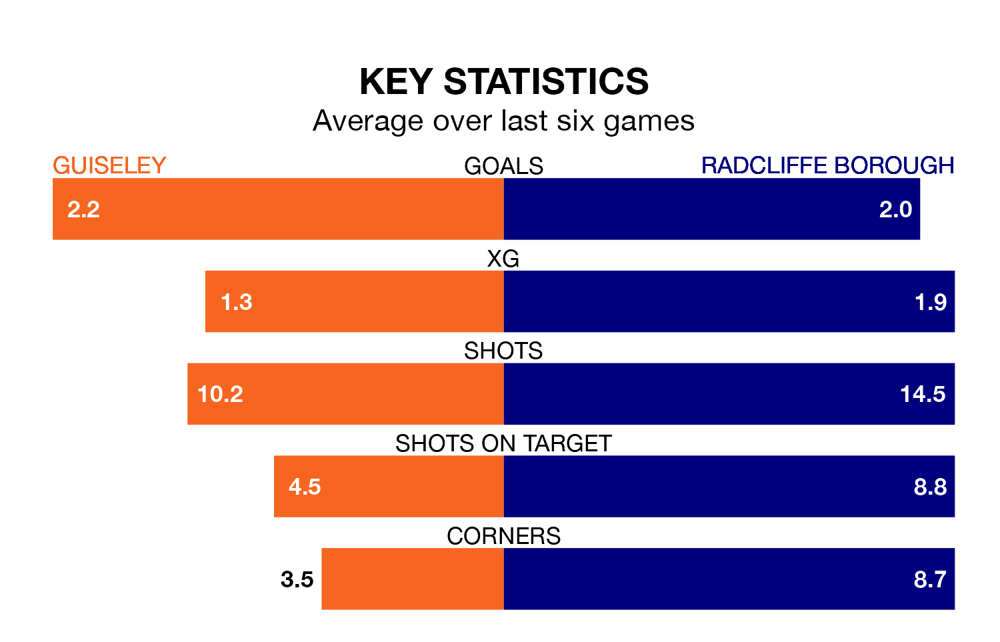

Radcliffe Borough face Guiseley on Saturday seeking to protect their long unbeaten run in the Northern Premier League.
The Boro are unbeaten in five, with three wins and two draws, ahead of the 3pm kick-off.
They face a Guiseley team who have won three and drawn one over the same number of games.
With 87 goals in 32 games so far this season, Radcliffe are the league's highest scorers with 2.7 goals per game. And they are conceding fewer than average, letting in 46 goals at a rate of 1.4 per game.
Guiseley are also above average scorers, with 1.9 goals per game, compared to a league average of 1.6. They have conceded 1.5 goals per game.
Borough are top of the table after 32 games, of which they have won 24 and drawn two, earning 74 points.
The Lions are seven places behind the Boro in eighth, with 15 wins and seven draws putting them on 52 points.
In the last three years, Guiseley and Radcliffe have played each other on three occasions. Guiseley won one of them and Radcliffe the other.
Their last meeting was on February 3, when Guiseley won 4-3 away.
Guiseley's last match was on Tuesday, a 2-1 win against Atherton Collieries.
Radcliffe beat Ilkeston Town 2-1 last time out, on February 24.
Updated: 09:34 (UTC), 08/03/24